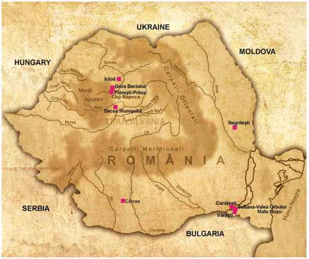
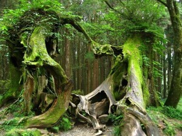
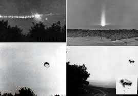
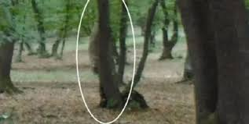
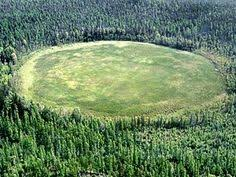

HOIA BACIU
Introduction

Located just west of Cluj-Napoca, Romania, the Hoia Baciu has a long standing history of paranormal sightings and unexplained phenomena, experienced by locals and visitors alike. Indeed, there have been so many reports over the past six decades, this one square mile of forest has been appropriately deemed as the “Bermuda Triangle of Europe.”
All this reported strange phenomena, coupled with the numerous photographic testimonies of extraterrestrial lights and mysterious spheres appearing within the forest have contributed in making the Hoia Baciu Forest one of the best-documented paranormal sites in the world. Science is not yet able to explain the source of this strange phenomena and are still waiting for answers, but speculation continues as to whether this forest is a portal to another world or to a parallel, unknown universe!
The Hoia-Baciu Forest is nestled not just in Transylvanian geography, but in its cultural DNA. Romania itself is drenched in dark folklore—home to the legend of Vlad the Impaler, vampiric mythologies, haunted monasteries, and haunted castles that echo with ancestral pain.
It’s no surprise that this mysterious woodland has become a beacon for the gothic subculture, horror writers, filmmakers, and spiritualists. Shows like Ghost Adventures have filmed inside its depths, documenting experiences that defy scientific explanation. Indie horror films like The Devil Complex have used the forest as their central character—an ancient, malevolent entity more terrifying than any antagonist
The Hoia-Baciu Forest is more than a spooky tourist destination. It is a living relic of the unknown—a dark sanctuary for those brave enough to confront the veil between this world and the next. It dares us to question what we believe, what we see, and what exists just beyond our understanding.
Literary
It has been called the creepiest forest in the world. And The Clearing is, allegedly, the creepiest place in the forest. It defies the investigations of soil scientists and attracts Romanian witches, sword-wielding Americans, and people who try to cleanse the forest of evil through the medium of yoga.

Named after a shepherd who went missing in the forest with a flock of 200 sheep, Hoia Baciu came to international attention in 1968 when Emil Barnea, a military technician, photographed what he claimed was a UFO hovering over The Clearing. What differentiates this story from other UFO claims is that Barnea had nothing to gain from reporting the sighting, and everything to lose. The Communist government equated a belief in the paranormal with madness and state-sabotage, and Barnea lost his job in a country which had no support for the sacked.
According to legend, hundreds of Romanian peasants were murdered in the Hoia Baciu forest sometime before the birth of Christ, and locals believe the spirits of these villagers still roam the land. Others speculate that the forest is home to some invisible time rift or gateway into another realm. Whatever is to be believed, many Romanians who live near the Hoia are convinced that should they enter the forest they would never come back, and thus avoid the woods at all costs
Hoia Baciu Forest is famous for the many reports of UFO sightings that have been made there over the years. Some visitors have claimed to see strange lights and objects in the sky, while others have reported encountering alien beings.
Many personal blogs have reported that some visitors felt dizzy, nauseous, or had headaches after viewing the lights.
There are accounts of a "strong sense of being watched," as if unseen beings were following them.

The forest is said to be haunted by the ghosts of people who died there, including soldiers who fought in battles that took place in the area. Visitors have reported seeing ghostly figures and hearing strange voices.
The two most popular explanations for the strange nature of the Hoia Baciu forest seem to be that it is either haunted or a realm with portals to other dimensions. Some people claim that the forest is haunted by the ghosts of peasants that were murdered and who now wander the forest in anger from being trapped within it. Another explanation appears to be that the forest is the location of portals to other dimensions, similar to explanations of the Bermuda Triangle.
Because of the forest’s strangeness, it has been the subject of several media presentations on the paranormal, including one documentary that was aired in Japan in 2015 based on excursions into the forest. Tour guides will take people on tours of the forest and some of them have even been brave enough to spend the night there. Tour guides who have stayed overnight have reported hearing strange things. In one account, they heard a sound that resembled a thumping hoof which stopped whenever they looked outside their tents.
Western bands that have visited the forest (such as Destination Truth and Ghost Adventures) have recorded mysterious lights in the sky, moving in unnatural ways.
People wrote that they saw "fireballs" moving between the trees or over the circular, vegetated area.Some stories say that electronic devices break down the moment these lights appear.
Some folklore tells of spirits pulling visitors into an "other world" before suddenly bringing them back, but hours or days later, with no memory of what happened.
Paranormal blogs such as Paranormal Globe and Atlas Obscura have reported sightings of "white specters" moving through the trees.
Many locals claim to hear screams, whispers, and nighttime laughter coming from deep within the forest, especially near the "treeless circle."

In addition to the famous UFO images, Parnia noted in his notebooks that some of the photographs captured "ghostly faces" that he did not see during filming, but appeared later on film.
A child who disappeared within the forest's grasp, only to return two decades later—unchanged. No aging. No memory. As though she had been cradled by time itself.
Some bands who have used EVP (Electronic Voice Phenomena) recording devices have claimed to have captured the sounds of words in unintelligible languages.
Contemporary Romanian writers likened the forest to a "gateway between the world of the living and the dead."
Research
Archaeological evidence confirms human settlement in the Hoia-Baciu region dating back to 6500 BC, making it one of the oldest known Neolithic sites in Romania. Part of the Starčevo–Kőrös–Criș culture, this land once bore witness to early civilization’s rituals, burials, and enigmatic architecture. Excavations unearthed ancient homes and burial grounds in the nearby Valea Lungă area—silent testaments to lives long vanished under the soil.
Visitors to the forest report strange symptoms—nausea, anxiety, a feeling of being watched—and malfunctioning electronic devices. Runners who venture into the forest often see "ectoplasm."
Trees grow in a zigzag or spiral pattern, a phenomenon that none of the scientists who have come to investigate have convincingly explained. In fact, every spiral tree grows clockwise.
Barnea’s photograph gained worldwide attention, and the forest became a hotspot for UFO enthusiasts. But potential sightings of flying saucers does not account for an abundance of other anomalies witnessed and captured in this bizarre forest. Countless reports of unusual electromagnetic activity, light orbs, disembodied voices and apparitions occur every year. These peculiarities seem especially heightened in an area of the forest known as the Poiana Rotunda.
That didn’t give the forest its reputation. It was only after a military technician, named Emil Barnea, photographed what he claimed to be a UFO hovering over a particular patch of forest, that the place captured the interest of people from all around the world. That particular patch of forest is now called The Clearing.
The Clearing is not your run-of-the-mill location. Creepily, this particular patch of the forest is where nothing grows. It’s almost as if all the trees and plants just stop growing around this oval patch in the ground.

The Poiana Rotuna, or “round meadow,” is a one kilometer area of the forest where trees do not grow. This near circle formation, which scientists believe has been around for two hundred years, is a vegetative dead zone, and home to all manner of odd (dare I say paranormal?) activity. Apart from an increase in apparition sightings and light phenomena, spikes in the electromagnetic field are often recorded within the circle.
Some extraterrestrial aficionados claim the Poiana Rotunda was hb1caused by a UFO that landed and the radiation from the craft has inhibited plant life from growing. While a creative theory, soil samples both within and outside of the circle have been tested, and a scientific explanation about the lack of growth has yet to be made
Even the Hoia Baciu Forest trees themselves hold an enigma, as these two-hundred-year-old trees seem to be young, and most of them are twisted at the trunk or unusual in shape. Most of the paranormal activity seems to be concentrated in a particular part of the forest which is free of vegetation and formed into a perfect circle.